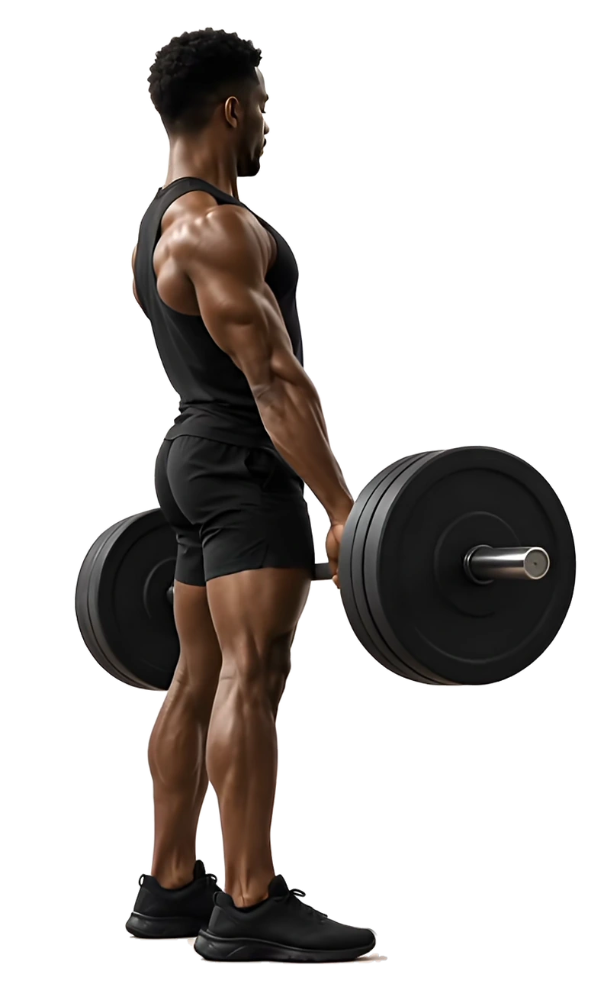

Muscle & Fitness Infusion
The Muscle & Fitness Infusion is designed for people who train regularly and want to support their body's recovery and performance. Muscle is built and repaired from amino acids, and after exercise your body relies on a steady supply of them to rebuild muscle fibres. This infusion provides eight of the nine essential amino acids, which the body cannot make and must obtain from the diet. These include leucine, isoleucine and valine, known as branched-chain amino acids, which are found in high concentrations in muscle. Leucine plays a particular role as it acts as a signal that switches on muscle protein synthesis, the process of building new muscle protein. Glutamine is the most abundant amino acid in muscle and blood, and levels can fall after intense or prolonged exercise. Carnitine transports fatty acids into the mitochondria, the structures inside each cell that produce energy, where they are used as fuel. Taurine helps regulate the flow of calcium within muscle cells, which is essential for every muscle contraction. The infusion is delivered in a litre of electrolyte-rich solution that rehydrates you and replaces the electrolytes lost through sweat.

What's in it
Ingredients
- Electrolyte-Rich Solution (1 litre)
- Sodium Chloride (242mmol)
- Potassium (5mmol)
- Calcium (2mmol)
- Bicarbonate (29mmol)
- Carnitine (1000mg)
- Glutamine (1000mg)
- L-Leucine (1000mg)
- L-Valine (1000mg)
- Isoleucine (1000mg)
- L-Phenylalanine (1000mg)
- L-Lysine (1000mg)
- L-Threonine (1000mg)
- L-Methionine (500mg)
- L-Tryptophan (500mg)
- Taurine (2000mg)
Ingredient guide
Electrolyte-Rich Solution
A balanced solution whose sodium, potassium, calcium, chloride and lactate content closely reflects that of blood plasma. It replenishes the electrolytes the body relies on for nerve signalling, muscle contraction and fluid balance.
Carnitine
A compound made in the body from the amino acids lysine and methionine, most of which is stored in muscle. Its main role is to transport fatty acids into the mitochondria, where they are broken down to produce energy. This makes it central to how the body uses fat as a fuel source.
Glutamine
The most abundant amino acid in the blood and muscle. It is considered conditionally essential because the body's needs can exceed what it can make during intense exercise, illness or stress. It is an important fuel for cells of the immune system and the lining of the gut, and it plays a role in maintaining muscle protein.
L-Leucine
An essential branched-chain amino acid and one of the most important for muscle. It acts as a key signal that switches on muscle protein synthesis, the process the body uses to build and repair muscle tissue.
L-Valine
An essential branched-chain amino acid that works alongside leucine and isoleucine. It is used to build muscle protein and can be used by muscle as a source of energy during prolonged exercise.
Isoleucine
An essential branched-chain amino acid found in high concentrations in muscle. It is used to build proteins, can be broken down within muscle for energy during exercise and is involved in the uptake of glucose into muscle cells.
L-Phenylalanine
An essential amino acid used to build proteins. The body also converts it into tyrosine, which is needed to make dopamine, noradrenaline and adrenaline.
L-Lysine
An essential amino acid, meaning the body cannot make it and it must come from the diet. It is a building block of proteins and has a particular role in collagen, where it helps give the protein its strength and stability. The body also uses lysine to make carnitine.
L-Threonine
An essential amino acid used to build proteins, including collagen and elastin, which give structure to connective tissues such as tendons and skin.
L-Methionine
An essential sulphur-containing amino acid. Every new protein the body makes begins with methionine. It is also used to make other important compounds, including carnitine and the antioxidant glutathione.
L-Tryptophan
An essential amino acid used to build proteins. The body also uses it to make serotonin, which helps regulate mood, and melatonin, which helps regulate sleep.
Taurine
A sulphur-containing amino acid found in high concentrations in the heart, muscles, brain and eyes. Unlike most amino acids it is not used to build proteins. Instead it helps regulate hydration within cells and the movement of calcium, which is important for muscle contraction. In the liver it also helps form bile, which aids the digestion of fats.
All infusions are prescribed and administered by, or under the supervision of, a registered clinician following individual clinical assessment. IV therapy is not a substitute for a balanced diet and healthy lifestyle. Individual results vary. Prices correct at time of publication and subject to change.
Back to all treatments